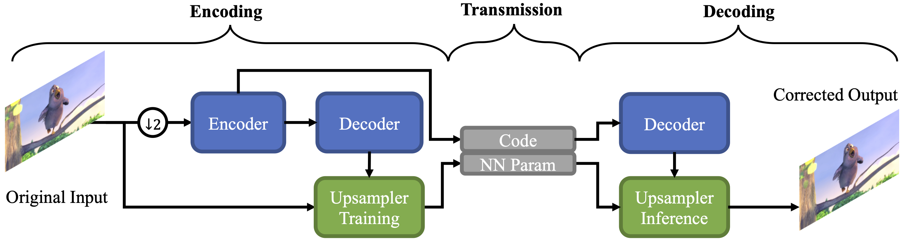
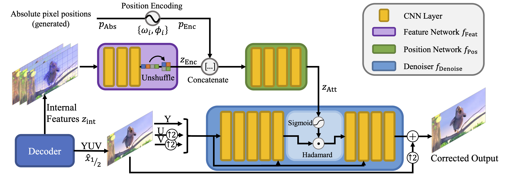
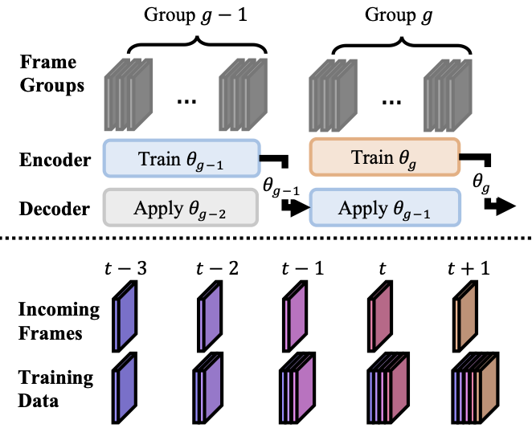
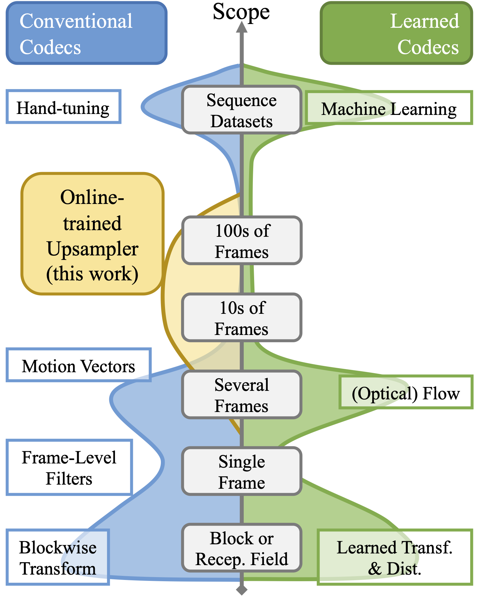

Online-Trained Upsampler for Deep Low Complexity Video Compression
A conditional Neural Field for Compressed Video Upsampling
ICCV 2021
Jan P. Klopp*, Keng-Chi Liu§, Shao-Yi Chien*, Liang-Gee Chen*
*Graduate Institute of Electrical Engineering, National Taiwan University
§Taiwan AI Labs
Main Results
- Online (at encoding time) trained upsampler applied after conventional compression
- Highly efficient compared to other deep learning based coding solutions (< 1 KMAC/pix for decoder)
- Coding gains (BDRate) up to 27.5% over x265, outperforming Online-Trained Denoiser
- Applicable to both low delay and random access coding modes
Methods
System

The upsampler is trained on a group of pictures on the low-resolution output of the conventional encoder.
Its parameters are signalled alongside the conventional encoder's code.
Network

The chosen network structure integrates positional information, internal features of the codec (motion vectors, block information),
and the decoded signal to predict the upsampling residual. The network architecture is simple enough to allow for fast training
when encoding and low complexity inference at decoding time.
Zero Latency Processing

Zero latency processing is enabled by reusing a previously signaled set of parameters at the decoder side while the encoder is updating
the parameters using group of frames currently being encoded.
Scope

Compression is about finding redundancies in data. Our work specifically targets redundancies that span dozens or even hundred frames.
Note that this differs from motion compensation or other flow-based methods as our method can deal with textures that have a coherent
structure but are difficult to predicut such as particle systems (fire, smoke, water) or a large group of leaves moving randomly in the wind.
Material
Paper (CVF)Cite
If you find our work helpful for your research, please consider citing it:
@InProceedings{Klopp_2021_ICCV,
author = {Klopp, Jan P. and Liu, Keng-Chi and Chien, Shao-Yi and Chen, Liang-Gee},
title = {Online-Trained Upsampler for Deep Low Complexity Video Compression},
booktitle = {Proceedings of the IEEE/CVF International Conference on Computer Vision (ICCV)},
month = {October},
year = {2021},
pages = {7929-7938}
}